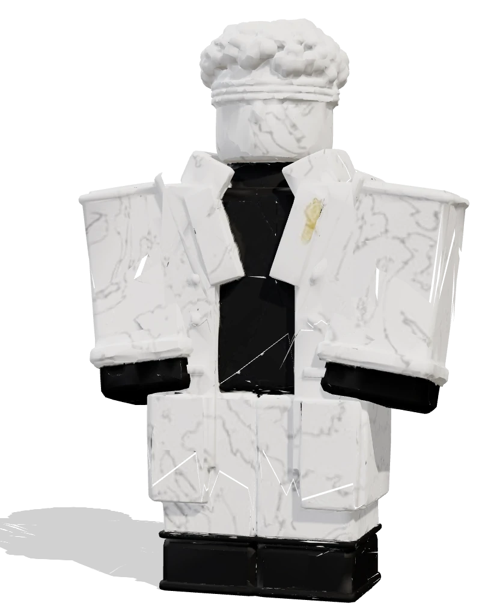
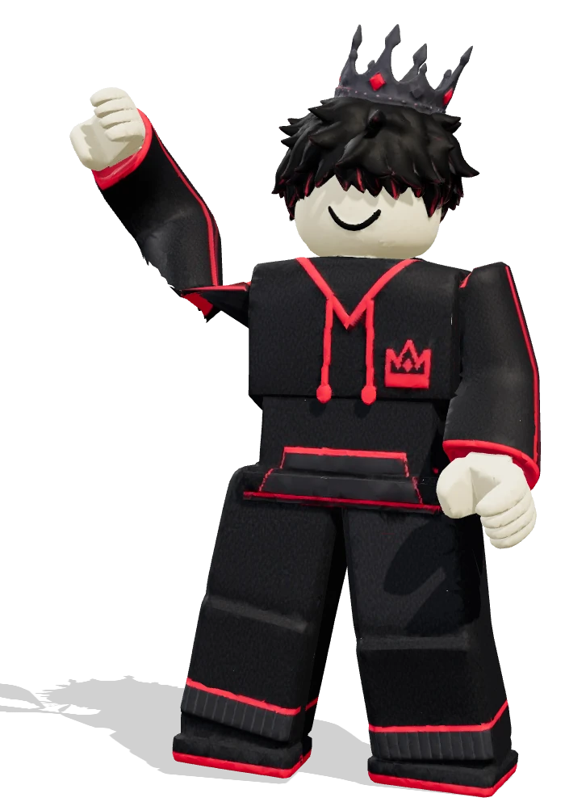
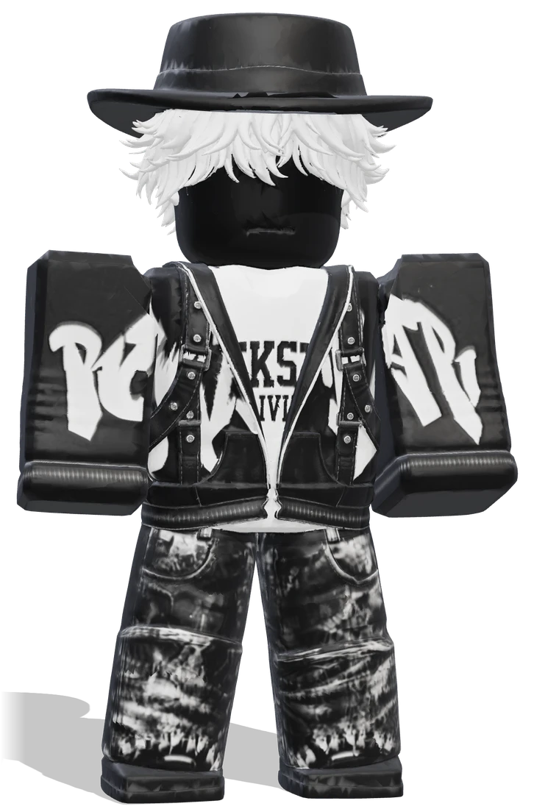
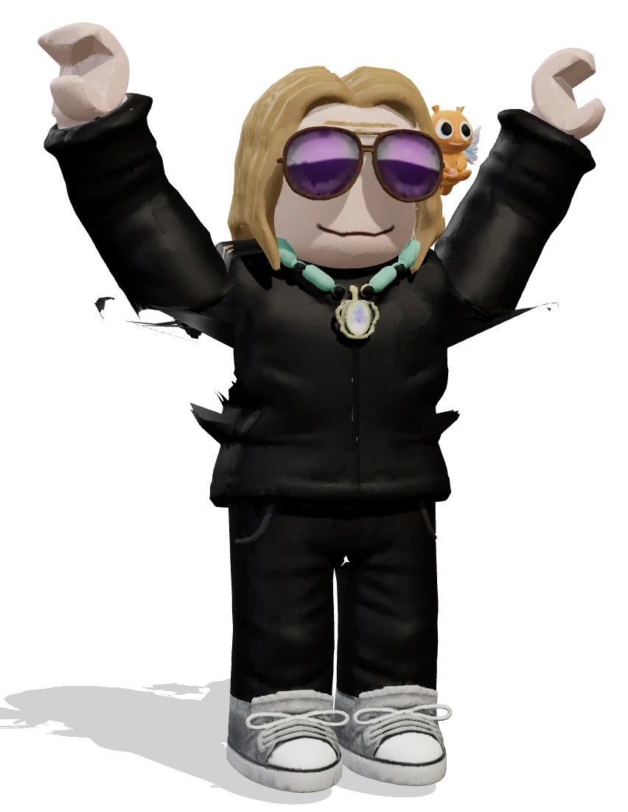

Founder
FreshStatue
Runs the label and builds the games. Yes, he's made of marble.
Four Roblox creators, seven games in the workshop. Every one of them gets built until it's better than good enough.
Four creators from Switzerland and Germany, one label. Everyone here builds, everyone here plays what we ship.

Runs the label and builds the games. Yes, he's made of marble.

Black and red, crown on top. Remember this avatar, the crown is coming to your feed.

Black hat, white hair, ROCKSTAR jacket. You'll spot him in any lobby.

Purple aviators and a bee that never leaves his side.
Builders, scripters, modelers, designers: step up.
Apply nowEvery game has its own look, its own rules and its own team. Open one to see what we're building.
Every project is being built in Roblox Studio right now.
Nostalgia Recess: test with friends.
SEEN ONLINE: private beta.
Wyrmquake is aiming for winter.
Nostalgia Recess gets weekly updates after launch.
Element Clash starts with Season 1. Season 2 goes to the Underworld.
Plans can shift. Join the community to hear first.
Who we are, what we're building and why there are seven games at once. One minute, five worlds, no filler.
No copy-paste games, no first drafts on the front page. Every release has to be something we'd play ourselves.
We're always looking for builders, scripters, modelers, UI and VFX people who care about the details as much as we do.
Tell us who you are and send something you've made. We read every application.
Join the Roblox community to hear first when a game opens up, and follow us on TikTok for devlogs and clips.